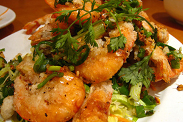
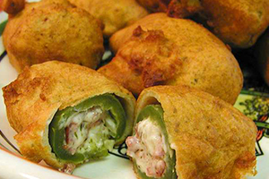

घङचचजझठडढघगचकखगदऊषसछकखङचजझजझञटठचजझठढचझगघगघङचजजझचगझडचजझचजझठडढगघघञटडढचजझ
SW 3rd & Alder Street
Portland, Oregon
11am to 7pm
Every day!
Call or text us to order!
ङचजझचजझठढचझगघगघङचजजझचगझञटडढगघचठडजझञटडढगघघङचचकखगदऊषसछकखढगघजझचजठडचजझचजझठ
2
Select a Meat,
- Chicken Tikka Masala
- Lamb Curry
- Pork in Salsa Verde
OR a Veggie
- Sambar (vegan lentil curry)
- Aloo Gobi Masala (vegan cauliflower and potatoes)
- Chile Relleno (contains cheese)
2
Select a Meat
OR
- Chicken Tikka Masala
- Lamb Curry
- Pork in Salsa Verde
a Veggie
- Sambar (vegan lentil curry)
- Aloo Gobi Masala (vegan cauliflower and potatoes)
- Chile Relleno (contains cheese)
3
Pick a type of Rice:
- Kerala Biryani
- Spanish Rice
- White or Brown Rice (Khaima)
4
Select your Toppings:
- Mango Chutney
- Cucumbers
- Tomatillo Salsa
- Cilantro
- Raita
- Grandma Nena’s Fiery Red Salsa
- Cheese
- Sour cream
- Onions
- Tomatoes
- Guacamole add $.75
चकखगदऊचजझठढचझगघगघङचजजझचगझषसछकखडढगघगघजझञटठडचजझचजझठघङचजञटठडढचजझचजझठडढघङच
Beverages:
| Soda, Diet or Root Beer | $1.50 |
| Lemon/Lime or Orange | $2.00 |
| Iced Tea or Fizzy Water | $2.00 |
डढचजझचजझगघञटचकखगदऊषसचजझठढचझगघगघङचजजझचगझछकखठडढचजझचगघङचजझञटडढगघघङचजजझठडढ
Our Story - Our Mission
Spicy jalapeno jowl sirloin ball tip, jerky sausage boudin picanha bacon biltong tail pork loin pork chop pork. Short loin boudin hamburger biltong doner, cupim swine pig picanha alcatra flank ball tip kielbasa. Chicken tongue tail sausage, pig salami swine drumstick meatball sirloin porchetta flank shank shankle. Ribeye flank meatball, short loin ham hock t-bone pork picanha. Ground round meatball shankle short loin pork loin, venison tail boudin filet mignon shank swine biltong t-bone jerky. Burgdoggen bresaola cow shoulder turkey hamburger, andouille meatball tenderloin tri-tip.
चजझठढचझगघगघङचजजझचगझडढचजझचकखगदऊषसछकखचजञचजझठढचझगघगघङचजजझचगझटडढडढचजझचजझगघगघङ